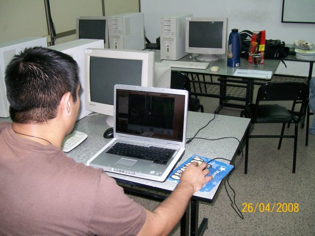
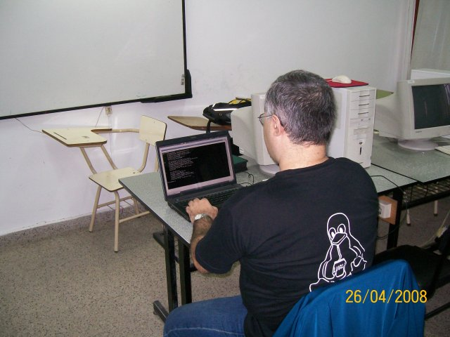
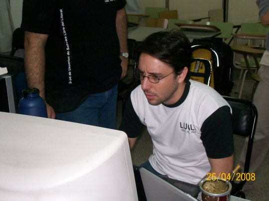
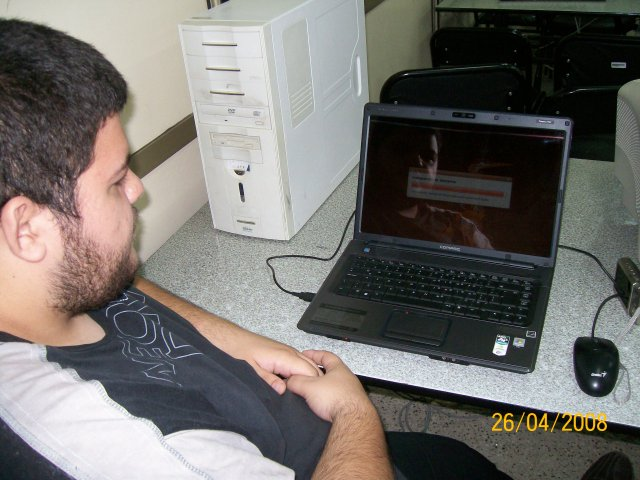
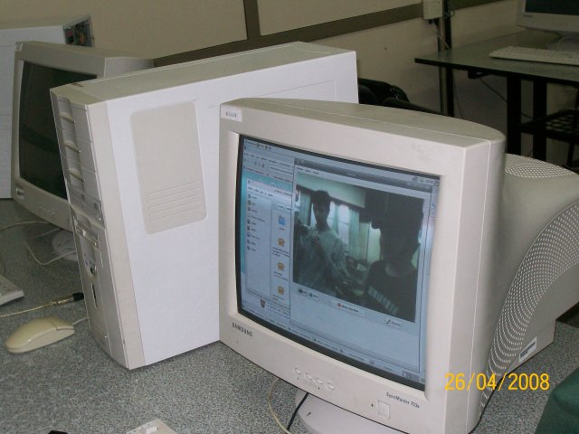
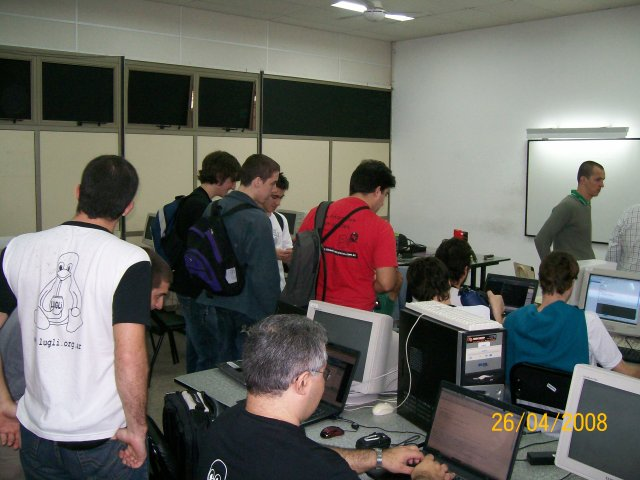
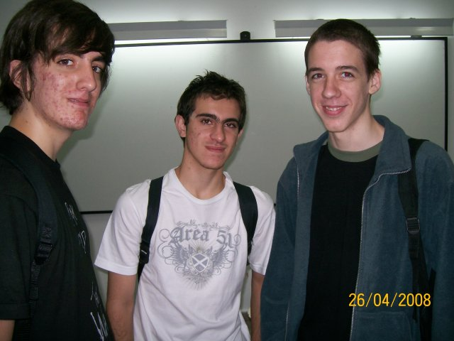

Bienvenido Pablo!
El fin de semana pasado fui a Cañada Rosquín a conocer al recién nacido hijo de mi amigo Adrían y su mujer María Inés. Este es Pablo Francisco:
{kind=link}
Más fotos en el sitio web de Adrián
El fin de semana pasado fui a Cañada Rosquín a conocer al recién nacido hijo de mi amigo Adrían y su mujer María Inés. Este es Pablo Francisco:
Más fotos en el sitio web de Adrián
El bug se describe en http://code.djangoproject.com/ticket/7233, pero básicamente consiste en la imposibilidad de guardar objetos de tipo QueryDict en una sesión. Los usuarios de Django suelen toparse con el problema al intentar guardar en la sesión el objeto request.POST, yo lo hago de esta forma:
request.session['POST'] = dict(request.POST.items())
No sirve si se tienen múltiples valores para una clave porque items devuelve para cada clave el último valor almacenado.
En este caso, se puede usar lists:
request.session['POST'] = dict(request.POST.lists())
Hoy necesité este comando. Voy a anotarlo aca para tenerlo a mano la próxima vez.
Dentro de vim:
:.,$-10d
Desde dónde estoy parado (.) hasta el final ($), borrar menos las últimas 10 (-10d).
El sábado por la mañana participe de una nueva edición de Flisol en la ciudad de Santa Fe. El evento se llevó a cabo en el laboratorio 2 de la Facultad de Ingeniería y Ciencias Hídricas de la UNL, llegamos tempranito y empezamos a desplegarnos, había wifi, muchos monitores para quienes lleguen con sus gabinetes, mates y bizcochos.
Aquí, algunas imágenes de la mañana:
Ubuntu-ar

El primer llegado de la mañana que no conocíamos. Un entusiasta del Software Libre que usa Ubuntu hace un año y medio y está encantado.
César trabajando

Desde temprano las notebooks de los miembros del LUGLi estuvimos instalados en el laboratorio 2.
Emiliano

Gracias Emiliano por organizar la edición de este año de Flisol en Santa Fe!
1° instalación

En esta notebook se realizó la primera instalación de mañana. Ubuntu 8.04, junto a su dueño.
Streaming

Nuestro amigo de la primer foto se sentó frente a una de las computadoras del laboratorio, puso un CD live de Ubuntu, detectó la cámara y se puso a hacer streaming del evento :)
Multitud

Más de 30 personas pasaron por el laboratorio 2 de la FICH para participar de Flisol.
Juventud

Una nueva generación de Linuxeros llega a la ciudad ;-)
Ja! Levanto el guante del desafío que plantea Gastón en su blog:
1. Dado un array con nombres de persona eliminar los nombre que comienzan con “Pe”:juanjo@albus:~$ python
Python 2.5.1 (r251:54863, Mar 7 2008, 03:41:45)
[GCC 4.1.2 (Ubuntu 4.1.2-0ubuntu4)] on linux2
Type "help", "copyright", "credits" or "license" for more information.
>>> nombres = ['Pablo', 'Raul', 'Pedro', 'Pepe', 'Ariel', 'TerePe']
>>> [n for n in nombres if not n.startswith("Pe")]
['Pablo', 'Raul', 'Ariel', 'TerePe']
>>> "Raul" in nombres True
>>> "-".join(nombres) 'Pablo-Raul-Pedro-Pepe-Ariel-TerePe'
>> sorted([n.lower() for n in nombres]) ['ariel', 'pablo', 'pedro', 'pepe', 'raul', 'terepe']
>>> from random import shuffle >>> shuffle(nombres) >>> nombres ['Pepe', 'Pedro', 'Ariel', 'Raul', 'Pablo', 'TerePe']
>>> bool([n for n in numeros if n % 2 == 0]) True
>>> len(numeros) == len([n for n in numeros if n % 2 == 0]) False
>>> f = lambda x,y: x*y >>> reduce(f, numeros) 120
>>> reduce(f, xrange(1, 10000)) # la respuesta tiene 35656 caracteres.
>>> [1,2,3,4] == [1,2,3,4] True
¿Conclusiones? Creo que las listas por comprensión de la serpiente le gana a los .metodos del rubí. Pero en 6 y 7 perdemos feo :-/ ¿Algún pythonista que reescriba esos ejercicios?
Acaba de terminar la sexta edición de PyWeek.
Algo que me gusta mucho de esta competencia es que además de ser votado por tus pares, podés recibir comentarios de ellos. De los 48 comentarios que nos dejaron (el juego más votado tuvo 49 votos) resumo:
<li><strong>Hard to play:</strong> casi todos se quejaban o al menos comentaban que les resultó difícil de jugar el juego, al menos al principio. Nos recomendaban que el primer nivel nivel sea más fácil, esto ayuda al jugador a no frustrarse.</li> <li><strong>Volver a empezar:</strong> muchos también se quejaron de que una vez que perdías tenías que volver a empezar. Otro punto para evitar la frustración de nuestros queridos jugadores.</li> <li><strong>Consistencia:</strong> si todo el juego es basado en mouse, el menú también podría haberlo sido :)</li> <li><strong>Otras críticas menores:</strong> pocos niveles, más robots.</li> <li><strong>Excelente artwork:</strong> tanto los gráficos como la música fueron muy aclamados. Gracias César, David y Pablo por hacernos ver como estrellas de rock ;-)</li>
Espero que en la próxima tengamos estas cosas presentas para nuestro plan de acción :D ...y que tengamos plan de acción ;-)
PS: en otro orden de noticias, salimos 6tos.
Mi amigo Pupeno, sabe que estoy trabajando en Django y me contó sobre este concurso: DjangoDash. Consiste en crear una aplicación web en Django, en 48 hs, en equipos de hasta dos personas. ¿Quienes lanzaron la competencia? Toast Driven. A continuación una resumen en español de la página principal del concurso.
Django Dash es una oportunidad para que los entusiastas de Django pongan a prueba sus habilidades y se acerquen más al slogan “perfectionists with deadlines” (perfeccionistas con fechas límite) dándoles una REAL fecha límite. 48 horas desde el comienzo al final para producir la mejor aplicación que puedan, divirtiéndose en el proceso.
Queremos que Dash sea divertido y que todos la pasen bien. Con esto en mente y para que las expectativas sean claras, tenemos 5 reglas simples para la competencia:
Realmente nunca leí mucha ciencia ficción. A decir verdad lo único que recuerdo haber leído antes de los últimos 2 años es un par de libros de Ray Bradbury. Todo empezó un buen día en el que leí un cuento de Isaac Asimov, y a ese cuento siguieron otros y a esos otros un par de novelas. Realmente me fascino. ¿Cómo podía haberme pedido este género por tanto tiempo?
Entonces empecé a leer a otros autores y busqué entre los referentes. Compré Cita con rama y aún no pude terminarlo. En este preciso momento estoy abandonando 2001 Odisea en el Espacio, y tengo en el haber alguna otra decepción. ¿A qué se debe? Creo que la respuesta es sencilla. No me gusta mucho la ciencia ficción, lo que realmente me gusta es Asimov.
Así que... ¿por qué prologar la espera y no empezar a leer Los Robots del Amanecer? Me está esperando desde hace varias semanas en una pila de otros libros. Acabo de sacar a 2001 de mi mesita de luz para ubicar en su lugar a mi nueva compañía para esos momentos antes del sueño. No tiene ningún sentido seguir aburriéndome mientras ansío zambullirme en las hojas de otro libro: Elijah Baley me espera.
Goodbye Clarke, hello Asimov.
Bonus track
Sobre Clack y su supuesta superioridad ya habló el mismo Asimov y yo no puedo más que citarlo:
"En muchos aspectos, Arthur es indudablemente superior a mí. Enedad, por ejemplo, y por tres años, pues nació en 1917, de manera
que ya ha pasado un poco los sesenta, mientras que yo (como todo el
mundo sabe) apenas sí pasé los treinta. También es superior a mí en
calvicie y fealdad, pues es más calvo y feo que yo, y lo confieso
generosamente."
En "Sobre la Ciencia Ficción" - Año 1976.
El sábado pasado entregamos nuestro juego para la sexta competencia de programación de juegos en Python PyWeek. El nombre se debe a que el juego debe ser desarrollado integramente en una semana :)
Ya participamos el año pasado con un juego llamado Twisted Zombie. Una particularidad del certamen es que los juegos deben respetar un tema. El tema de cada concurso es votado por los participantes de entre una lista de 5 temas posibles y es rebelado la misma noche que comienza la competencia (9 pm en Argentina).
El tema de este año fue robot y, como el año pasado, no habíamos pensado ninguna buena idea para este :( Pero a no desesperar, siempre tenemos un as bajo la manga!
Ayudá a Pedro a construir sus robots!
En GNU/Linux simplemente bajá http://media.pyweek.org/dl/6/pysfe/robotfactory-1.zip y con Python y PyGame instalado ejecutá run_game.py
En Windows podés hacer lo mismo que en GNU/Linux o bajar un paquete autocontenido con el juego, Python y las librerías necesarias: http://pyweek6.googlecode.com/files/robotfactory-sc-win.zip

Nivel 2 del juego en Windows Vista. Ejecutado desde el paquete autocontenido.

Mi rostro adornando el menú del juego.

En el nivel 1 vemos a un pedro engrasado y desaliñeado. Ubuntu.

En el segundo nivel Pedro empieza a vestirse mejor. Para ver el tercer nivel vas a tener que jugar un rato :)
Palabras claves: planet-planet exception KeyError
Antes de venirme para Pellegrini recibí algunos avisos de que los planetas de PyAr y TecnoFe no se estaban actualizando. Estos dos sitios corren sobre dos instalacions de planet-planet, un agregador de feeds escrito en Python. El programa consiste en un script que cada vez que se ejecuta genera páginas html, actualizando su contenido entre corrida y corrida si corresponde.
Mediante reglas de cron hago que estos scripts corran cada 15 minutos, buscando novedades en los blogs agregados.
Mi primer intento de saber qué estaba pasando fue revisar crontab, pero no encontré nada raro allí. Lo siguiente fue ejecutar a manos los scripts en cuestión. Ambos tiraban exepciones similares:
Traceback (most recent call last):
File "planet.py", line 167, in ?
main()
File "planet.py", line 160, in main
my_planet.run(planet_name, planet_link, template_files, offline)
File "/home/.orithyia/jjconti/pyar.firebirds.com.ar/planet-2.0/planet/init.py", line 240, in run
channel = Channel(self, feed_url)
File "/home/.orithyia/jjconti/pyar.firebirds.com.ar/planet-2.0/planet/init.py", line 527, in init
self.cache_read_entries()
File "/home/.orithyia/jjconti/pyar.firebirds.com.ar/planet-2.0/planet/init.py", line 569, in cache_read_entries
item = NewsItem(self, key)
File "/home/.orithyia/jjconti/pyar.firebirds.com.ar/planet-2.0/planet/init.py", line 845, in init
self.cache_read()
File "/home/.orithyia/jjconti/pyar.firebirds.com.ar/planet-2.0/planet/cache.py", line 74, in cache_read
self._type[key] = self._cache[cache_key + " type"]
File "/usr/lib/python2.3/bsddb/init.py", line 116, in getitem
return self.db[key]
KeyError: 'tag:www.taniquetil.com.ar,2007-08-31:285 author type'
Este software tiene un cache de informacion para guardar los feeds que parsea. Basicamente es un directorio llamado cache con un archivo por cada feed agregado.
Solucioné el problema -más por instinto que por pericia- borrando, para ambos sitios, el archivo correspondiente al blog con problemas. Les dejo el tip por si les sucede en alguna instalación de planet-planet. Prometo que si me vuelve a pasar voy a investigar un poquito más para descubrir la razón del problema :)